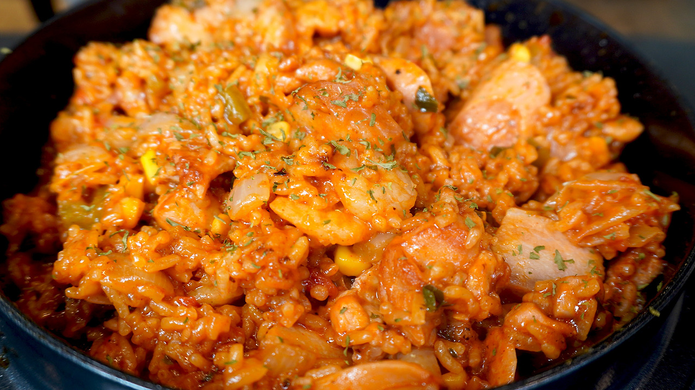

Jambalaya Recipe
Home

Ingredients
- Butter: 40g
- Sausage: 300g
- Pork belly: 300g
- Chicken thigh: 300g
- Cajun seasoning: 3 table spoon
- Onion: 150g
- Pepper: 80g
- Rice: 300g
- Tomato: 150g
- Tomato spaghetti sauce: 100g
- Water: 360ml
- Chicken broth: 5 table spoon
- Sweet corn: 50g
- Shirimps: 100g
- Parcely: 7g
Steps
- Put butter, sausage, pork belly, chicken thigh and cajun seasoning into a pot and stir-fry until enough oil comes out from the meat and sausage.
- Add onion, pepper and rice, stir-fry until the onion becomes transparent.
- Add tomato, spaghetti sauce, water, chicken broth, sweet cornl shirimps and parcely, cover with a lid, and simmer on low heat for 30 minutes.